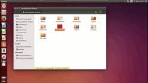
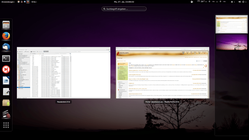
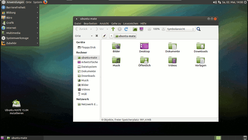
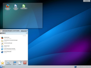
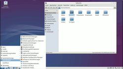
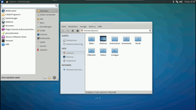
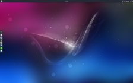

Einsteiger
Hallo und herzlich willkommen in der Welt von Ubuntu Linux! Diese Seiten sind für Erstanwender von Ubuntu gedacht. Hier wird erläutert, wie man Ubuntu testen und installieren kann. Außerdem soll der Ein- und Umstieg durch eine Einführung erleichtert werden.
Keine Angst – zwar funktioniert manches unter Linux anders als unter Windows, doch Linux ist nicht schwerer zu bedienen. Man muss jedoch ein paar Dinge neu erlernen, denn ein Linux ist kein Windows.
Hallo erstmal!¶
Warum sollte man sich überhaupt für Ubuntu Linux interessieren? Der Brief an einen Windowsnutzer soll es verdeutlichen.
Wer stattdessen einen optischen Eindruck bevorzugt, dem sei die Ubuntu-Online-Tour empfohlen. Allerdings wird hier ausschließlich die Desktop-Oberfläche Unity gezeigt - also nur eine von vielen unterschiedlichen Varianten, wie Ubuntu aussehen kann.
Linux, Ubuntu und Distributionen?¶
Was ist denn das? In der Welt von Linux gibt es eine Reihe von Begriffen, die man sich aneignen sollte, damit man versteht, worum es bei Themen rund um Linux und freier Software eigentlich geht. Die Artikel Was ist Linux und Was ist Ubuntu liefern einen Überblick zu diesen Begriffen.
Ubuntu, Kubuntu, Xubuntu, Lubuntu, Ubuntu GNOME?¶
Bei all diesen Varianten handelt es sich um ein und dieselbe Distribution, verwendet werden aber unterschiedliche Benutzeroberflächen. In Ubuntu war das bis zur Version 10.10 standardmäßig GNOME 2, aktuell und zukünftig wird das eigens entwickelte Unity benutzt. Kubuntu verwendet die KDE Software Compilation, Xubuntu Xfce, Lubuntu LXDE, Ubuntu GNOME die GNOME Shell, Ubuntu Budgie Budgie usw.
Außerdem werden teilweise unterschiedliche Programme installiert. Doch die Technik, die sich hinter den Benutzeroberflächen verbirgt, ist immer dieselbe, nur sieht sie eben ein bisschen anders aus. Ferner gibt es noch Spezialvarianten wie Edubuntu für schulische Anwendung oder eine Version für Server (Server Installation).
|  |
| Ubuntu |
|  |
| Ubuntu GNOME |
|  |
| Ubuntu MATE |
|  |
| Kubuntu |
|  |
| Lubuntu |
|  |
| Xubuntu |
|  |
| Ubuntu Budgie |
Warum nicht alles auf mehrere DVDs verteilen¶
Dieser Schritt soll vermieden werden. Benutzer brauchen üblicherweise nur eine Benutzeroberfläche (Desktop-Umgebung), Betreiber von Servern dagegen keine grafische Oberfläche. Ubuntu wird weltweit verteilt. In Europa leben wir auf einem hohen Standard. Das Herunterladen großer Dateien ist mit den üblichen Internet-Pauschaltarifen ("flatrates") billig, und so gut wie jeder Rechner ist mit einem DVD-Laufwerk ausgestattet. Doch in anderen Teilen der Welt sieht das anders aus: Moderne Rechner sind selten. Und das gilt auch für schnelle und günstige Internetanbindungen.
Kann ich denn auch unter Ubuntu KDE-Programme verwenden?¶
Ja. Wie bereits erwähnt, sind Ubuntu und die verschiedenen Varianten eine und dieselbe Distribution. Möchte man z.B. unter GNOME ein KDE-Programm wie Amarok nutzen, so installiert man das Programm einfach. Möchte man eine weitere Desktop-Umgebung installieren, so steht auch dem nichts entgegen. Beim Anmelden kann der Benutzer – wenn mehrere Desktop-Umgebungen installiert sind – dann auswählen, welche Desktop-Umgebung gestartet werden soll. Selbstverständlich kann man auch Serverdienste unter Ubuntu nutzen oder eine Serverinstallation nachträglich mit einer grafischen Oberfläche ausstatten.
Wie werden die Versionen bezeichnet?¶
Was heißt Trusty oder Xenial?¶
Ubuntu erscheint alle 6 Monate in einer neuen Version. Dies kann man schon anhand der Versionsnummer erkennen. So heißen die Versionen 6.06, 8.10, 12.04, 14.04 usw. Die erste Ziffer steht für das Jahr und die zweite für den Monat der Veröffentlichung. Ubuntu 16.04 wurde also im April 2016 herausgegeben, und Ubuntu 16.10 ist folgerichtig im Oktober 2016 erschienen usw.
Zusätzlich zu dieser Nummerierung kennzeichnen die Entwickler die verschiedenen Versionen mit Tiernamen. Dabei wählt Mark Shuttleworth einen englischen Tiernamen mit einem Adjektiv, das mit dem gleichen Buchstaben anfängt, aus. Die Anfangsbuchstaben werden seit 6.06 "Dapper Drake" in alphabetischer Reihenfolge ausgewählt. Die Version 12.04 hat beispielsweise den Namen "Precise Pangolin" ("Präzises Schuppentier") bekommen und ist die 16. Version von Ubuntu.
Was heißt LTS?¶
Diese Abkürzung steht für "Long Term Support", auf Deutsch also "Langzeitunterstützung". Alle zwei Jahre wird eine Version veröffentlicht, die im Gegensatz zu den anderen Versionen deutlich länger (5 Jahre) mit Aktualisierungen (engl.: "updates"), u.a. Fehler- und Sicherheitskorrekturen, versorgt wird. Der Artikel Unterschiede LTS und normale Version enthält die grundsätzlichen Unterschiede zwischen den LTS- und den anderen Versionen.
Was heißt 64-Bit?¶
Moderne Prozessoren bieten u.a. "breitere" Wege für die interne Datenübertragung. In der Linux-Welt wird als Kürzel oft amd64 oder x86_64 verwendet – im Gegensatz zu i386 oder x86 für 32-Bit. Besitzt man einen 64-bit-fähigen Prozessor, sollte man generell von den diversen Vorteilen Gebrauch machen. Mehr Informationen liefert der Artikel 64-Bit-Architektur.
Welches ist denn das richtige *buntu für mich?¶
Das muss jeder selbst entscheiden. Grob gesagt: Ubuntu sowie Kubuntu sind vergleichbar mit anderen bekannten Betriebssystemen und für Umsteiger besonders geeignet, was den Umfang und den Arbeitskomfort betrifft. Xubuntu und Lubuntu benötigen etwas weniger Hauptspeicher, Plattenplatz und Prozessorkapazität und eignen sich dadurch besonders für leistungsschwächere Rechner. Über die Live- bzw. Desktop-CDs kann man in jede Desktop-Umgebung reinschnuppern.
Informationen zum Herunterladen und Tipps, welche Ubuntu Version man benutzen sollte, findet man im Artikel Downloads.
Ausprobieren¶
 Ubuntu kann man ganz ohne Risiko ausprobieren. Auf dieser Seite ist die Beschreibung zur Desktop-CD zu finden. Damit kann man Ubuntu starten und anschauen, ohne dass am bisherigen Betriebssystem etwas verändert wird. Es ist ganz einfach. Allerdings werden Änderungen am System, die man eventuell vornehmen möchte, nicht gespeichert. Wird Ubuntu auf diese Art verwendet, spricht man von einem Live-System.
Ubuntu kann man ganz ohne Risiko ausprobieren. Auf dieser Seite ist die Beschreibung zur Desktop-CD zu finden. Damit kann man Ubuntu starten und anschauen, ohne dass am bisherigen Betriebssystem etwas verändert wird. Es ist ganz einfach. Allerdings werden Änderungen am System, die man eventuell vornehmen möchte, nicht gespeichert. Wird Ubuntu auf diese Art verwendet, spricht man von einem Live-System.
Gefällt dieses Ubuntu-Live-System, kann man es aus dem laufenden System heraus direkt installieren. Wenn Ubuntu installiert wurde, werden eventuelle Änderungen am System selbstverständlich übernommen. Eine bestehende Windows-Installation braucht man nicht zu entfernen, um Ubuntu zu installieren (das gilt auch für andere Betriebssysteme). Wer sich entscheidet, Ubuntu neben einem anderen Betriebssystem zu installieren, wird bei einem Neustart des Computers immer gefragt werden, welches System gestartet werden soll. Natürlich kann man am Anfang auch nur das Live-System verwenden, um Ubuntu ausgiebig zu testen.
Wenn man keine Desktop-CD herunterladen möchte, kann man auch einfach die zahlreichen Testberichte studieren. Internetseiten dazu findet man in diesem Artikel.
Installieren¶
 Hat man sich für Ubuntu entschieden, so sollte man es auf der Festplatte installieren. Die Installation von Ubuntu ist nicht schwierig.
Hat man sich für Ubuntu entschieden, so sollte man es auf der Festplatte installieren. Die Installation von Ubuntu ist nicht schwierig.
Bebilderte Anleitung: Ubuntu installieren
Hinweis:
Leider hat es die Fa. Microsoft geschafft, ab Windows 8 mit Secure Boot ein Verfahren zu etablieren, dass die Installation von anderen Betriebssystemen bewusst deutlich erschwert. Besitzer entsprechender Hardware sollten sich daher ausführlich mit der Artikelserie EFI Bootmanagement befassen. Alternativ kann man diese Funktion auch deaktivieren und die Windows-Installation komplett durch Ubuntu ersetzen (also auf ein Dualboot-System verzichten). Rechner mit Windows 7 oder älter sind in der Regel nicht von diesem Problem betroffen.
Nicht verschwiegen werden darf, dass in sehr seltenen Einzelfällen (manche Notebooks von Samsung und Lenovo) die Installation von Ubuntu zu irreparablen Hardware-Schäden geführt hat (Quelle).
Windows weiter nutzen¶
 Ubuntu kann zusammen mit anderen Betriebssystemen auf dem gleichen Rechner installiert werden. Nach dem Anschalten des Rechners erscheint ein Menü, der "Grand Unified Bootloader" (kurz: GRUB 2), mit dem man auswählen kann, welches Betriebssystem geladen werden soll. Am Anfang fühlt man sich eventuell mit einem zweiten System auf der Festplatte etwas sicherer. Noch sicherer ist die Verwendung einer eigenen Festplatte speziell für Ubuntu.
Ubuntu kann zusammen mit anderen Betriebssystemen auf dem gleichen Rechner installiert werden. Nach dem Anschalten des Rechners erscheint ein Menü, der "Grand Unified Bootloader" (kurz: GRUB 2), mit dem man auswählen kann, welches Betriebssystem geladen werden soll. Am Anfang fühlt man sich eventuell mit einem zweiten System auf der Festplatte etwas sicherer. Noch sicherer ist die Verwendung einer eigenen Festplatte speziell für Ubuntu.
Tipps und Tricks: Ubuntu und MS-Windows gemeinsam nutzen
Daten mitnehmen¶
 Wenn man einmal beschlossen hat, bei Ubuntu zu bleiben, möchte man vermutlich Daten aus Windows übernehmen. Die für Linux verfügbaren Programme können in der Regel mit Dokumenten und anderen Dateien aus der Windows-Welt umgehen.
Wenn man einmal beschlossen hat, bei Ubuntu zu bleiben, möchte man vermutlich Daten aus Windows übernehmen. Die für Linux verfügbaren Programme können in der Regel mit Dokumenten und anderen Dateien aus der Windows-Welt umgehen.
Grundwissen¶
 Ubuntu ist recht einfach und intuitiv zu bedienen. Dennoch sollte man die Einführung in die Grundlagen lesen. Dort erfährt man von einigen besonderen Funktionen und Unterschieden zu anderen Betriebssystemen.
Ubuntu ist recht einfach und intuitiv zu bedienen. Dennoch sollte man die Einführung in die Grundlagen lesen. Dort erfährt man von einigen besonderen Funktionen und Unterschieden zu anderen Betriebssystemen.
Um sich auch ohne ständigen Internetzugang einen Überblick über die Möglichkeiten und Funktionen zu verschaffen, wird empfohlen, sich das kostenlose Handbuch "Erste Schritte" für Ubuntu 12.04 auf Ubuntu-Manual.org 
 im PDF-Format
im PDF-Format  (155 Seiten, ca. 10 MiB) herunterzuladen. Dort ist auch eine aktuellere Anleitung zum inzwischen nicht mehr unterstützen Ubuntu 13.04 zu finden. Weitere Literatur ist ebenfalls verfügbar.
(155 Seiten, ca. 10 MiB) herunterzuladen. Dort ist auch eine aktuellere Anleitung zum inzwischen nicht mehr unterstützen Ubuntu 13.04 zu finden. Weitere Literatur ist ebenfalls verfügbar.
Oft haben Einsteiger Probleme, sich im Linux-Dschungel zurechtzufinden. Denn bei Linux ist manches anders. Alte Gewohnheiten, die man sich zum Beispiel beim Arbeiten mit Windows angeeignet hat, müssen abgelegt werden.
Wenn man Probleme hat und den persönlichen Kontakt sucht, gibt es in ganz Deutschland verschiedene private Ansprechpartner, die sich freiwillig dazu bereit erklärt haben, zu helfen:
Die "Standard-Nacharbeiten"¶
 Prinzipiell ist Ubuntu nach der Installation eine fertig eingerichtete und benutzbare Distribution. Für eine volle Funktionalität ergänzen die meisten noch einige Dinge, die aus verschiedenen Gründen in der Grundinstallation nicht enthalten sind.
Prinzipiell ist Ubuntu nach der Installation eine fertig eingerichtete und benutzbare Distribution. Für eine volle Funktionalität ergänzen die meisten noch einige Dinge, die aus verschiedenen Gründen in der Grundinstallation nicht enthalten sind.
Erste Schritte nach der Installation
Hintergrundinfos¶

Links rund um Ubuntu und Linux
 u.a. Anleitungen/Handbücher und Hardwaredatenbanken
u.a. Anleitungen/Handbücher und Hardwaredatenbanken
- Erstellt mit Inyoka
-
 2004 – 2017 ubuntuusers.de • Einige Rechte vorbehalten
2004 – 2017 ubuntuusers.de • Einige Rechte vorbehalten
Lizenz • Kontakt • Datenschutz • Impressum • Serverstatus -
Serverhousing gespendet von